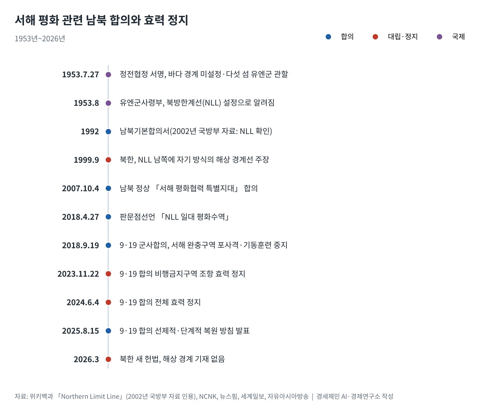
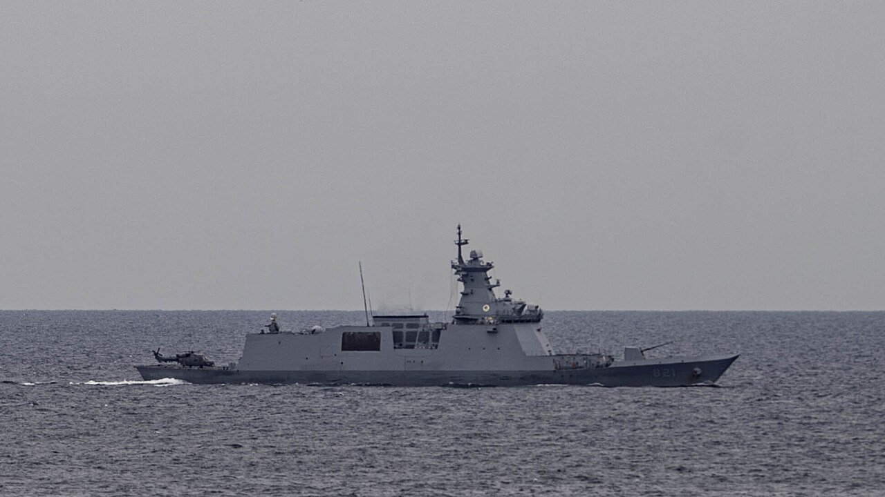

[서해평화 가능한가⑦] 평화의 설계, 한국 정부가 풀어야 할 방정식
정전협정이 비워 둔 바다의 선, 북한 새 헌법도 해상 경계는 적지 않아
2007년·2018년 「서해 평화수역」 약속, 9·19 군사합의는 2024년 6월 전부 효력 정지
미국은 대북 억제를 한국에 맡기고, 중국은 서해 구조물 일부를 옮기기 시작
AI경세제민=김갑봉 기자 | 서해 평화는 네 개의 변수가 얽힌 방정식이다. 정전협정이 비워 둔 바다의 선, 북한의 적대적 두 국가 노선, 미국의 동맹 분담 요구, 중국의 해양 진출이다. 2026년 들어 뒤의 세 변수가 모두 움직였다.
북한은 3월 새 헌법에 영토 조항을 넣고도 해상 경계는 적지 않았다. 미국은 1월 국방전략에서 대북 억제의 1차 책임을 한국에 넘겼다. 중국은 서해 잠정조치수역 구조물 일부를 옮기고 있다고 밝혔다. 서해 연재를 마치며 해법의 조건을 정리한다.
비어 있는 선에서 시작하는 방정식
1953년 7월 27일 정전협정은 바다의 경계를 정하지 않았다. 협정은 백령도와 연평도를 비롯한 다섯 섬을 유엔군 관할로 남겼다. 북방한계선(NLL)은 한 달쯤 뒤 유엔군사령부가 그은 선으로 알려져 있다.
북한은 1999년 9월 NLL보다 남쪽의 선을 내세웠다. 2024년 1월 김정은 국무위원장은 「불법무법의 《북방한계선》」을 허용하지 않겠다고 했다. 2026년 새 헌법은 남쪽으로 대한민국과 접한 영토만 적었다.
해상 경계가 비어 있다는 사실은 위험이자 공간이다. 선이 없으니 충돌의 명분이 생기고, 선이 없으니 새로 그을 여지도 남는다. 방정식의 첫 항은 이 빈칸을 무력이 아닌 합의로 채우는 일이다.
세 번의 약속, 두 번의 정지
남북은 서해의 빈칸을 채우려 여러 번 약속했다. 2002년 국방부 자료는 1992년 남북기본합의서가 NLL을 확인했다고 봤다. 2007년 10월 4일 남북 정상은 「서해 평화협력 특별지대」를 만들기로 했다.
2018년 4월 27일 판문점선언은 「서해 북방한계선 일대를 평화수역으로 만들어」 우발 충돌을 막고 안전한 어로를 보장하기로 했다. 같은 해 9·19 군사합의는 서해에 완충구역을 두고 포사격과 해상 기동훈련을 멈추기로 했다.
약속은 오래가지 못했다. 정부는 2023년 11월 22일 북한의 정찰위성 발사 뒤 비행금지구역 조항 효력을 정지했다. 2024년 6월 4일에는 북한의 도발을 이유로 합의 전체의 효력을 정지했다.

이재명 대통령은 2025년 8·15 경축사에서 9·19 합의를 선제적·단계적으로 복원하겠다고 밝혔다. 뉴스핌에 따르면 정부는 공중 완충구역 조항부터 되살리는 방안을 검토했다. 군 안팎에서는 감시·정찰 제약을 걱정하는 목소리도 나왔다.
강신철 국방부 장관 후보자는 2026년 9월 16일 국회 인사청문회에서 「여러 가지 안보환경을 고려해 가면서 잘 검토해 나가겠다」고 말했다. 9·19는 남북 군사당국이 합의했다는 데 큰 의미가 있다고도 했다. 복원은 아직 검토 단계다.
동맹 안의 자율, 전작권과 억제의 분업
미국 국방전략은 「한국은 북한 억제의 1차 책임을 질 능력이 있다」고 적었다. 엘브리지 콜비 미국 국방부 정책차관도 3월 상원 진술에서 한국이 북한에 대해 그 역할을 하라고 촉구했다. 억제의 분업이 문서로 굳었다.
한미 두 정부는 2025년 11월 공동 설명자료에서 전시작전통제권 전환을 위한 협력을 이어 가기로 했다. 한국은 국방비를 국내총생산의 3.5%로 늘리겠다고 했다. 강 후보자는 전환 조건 충족이 「상당히 보완됐다」고 봤다.
전작권 전환은 미래연합사령부의 완전운용능력 검증, 한국군 핵심 능력 확보 같은 조건에 묶여 있다. 연구소는 전환 뒤 서해 위기 대응도 한국군이 앞장서는 구조가 된다고 본다. 억제를 맡는 만큼 위기 관리 책임도 커진다.

중국 변수, 「영토 보전」 논리와 서해
중국은 2022년 한중 잠정조치수역에 양식 시설 2개와 관리 시설 1개를 세웠다. 이 대통령은 1월 5일 정상회담 뒤 7일 중국 측이 시설을 옮기겠다고 했다고 밝혔다. 중국 외교부는 1월 27일 관리 플랫폼 이동 작업이 진행 중이라고 했다.
중국은 주권과 영토 문제에서 물러서지 않는다는 원칙을 문서로 밝혀 왔다. 2022년 8월 국무원 대만사무판공실 백서는 「무력 사용을 포기하지 않는다」고 적었다. 무력은 「최후의 수단」이라고도 했다.
미국 인도태평양사령관은 4월 의회 진술에서 중국이 남중국해·동중국해와 함께 서해에서도 분쟁 지형에 주권을 주장한다고 적었다. 서해가 주권 경쟁의 언어로 읽히기 시작하면 남북 문제도 그 틀에 끌려 들어간다.
방정식의 해법, 네 개의 항
첫째 항은 우발 충돌 방지다. 9·19 합의의 해상 조항을 되살린다면 북한의 응답과 검증 절차를 함께 설계해야 한다. 북한이 응하지 않아도 한국 해군과 해경의 교전 규칙, 어선 보호 절차는 공개된 원칙으로 다듬을 수 있다.
둘째 항은 국제 규범의 활용이다. 북한은 2025년 5월 유네스코 절차를 써서 백령·대청 세계지질공원 심사를 세웠다. 한국도 유엔군사령부의 정전 관리 기록, 국제해양법 원칙을 근거로 서해의 현실을 국제 무대에 설명해야 한다.
셋째 항은 한중 해양경계 협상이다. 잠정조치수역 구조물 문제는 정상회담 의제로 올라 일부 진전을 봤다. 구조물 이동의 완료 여부와 경계 획정 협상 일정을 공개 문서로 확인해 가는 일이 남았다.
넷째 항은 서해5도 주민이다. 섬 주민의 조업과 생활이 안정돼야 서해 평화는 구호가 아닌 현실이 된다. 군사 합의와 동맹 협의, 한중 협상의 결과는 결국 주민이 바다에 나갈 수 있는 날수로 평가받는다.
정전협정이 비워 둔 선은 70년 넘게 채워지지 않았다. 북한은 헌법에서도 그 선을 비웠고, 미국은 억제의 짐을 한국에 넘겼다. 서해의 방정식은 남북과 동맹, 한중의 세 탁자를 한 번에 다룰 때 풀린다.
참고문헌
기관 자료
- Elbridge A. Colby(미국 국방부 정책차관), 「Statement of The Honorable Elbridge Colby」(상원 군사위원회 서면 진술), 2026년 3월 3일. https://www.armed-services.senate.gov/download/testimony/colby-opening-statement
- Adm. Samuel J. Paparo(미국 인도태평양사령관), 「Statement of Admiral Samuel J. Paparo」(상원 군사위원회 서면 진술), 2026년 4월. https://www.armed-services.senate.gov/imo/media/doc/paparo_opening_statement.pdf
- 중국 국무원 대만사무판공실·국무원 신문판공실, "The Taiwan Question and China's Reunification in the New Era"(백서), 2022년 8월 10일. https://english.www.gov.cn/archive/whitepaper/202208/10/content_WS62f34f46c6d02e533532f0ac.html
연구 논문과 보고서
- National Committee on North Korea(NCNK), "The Northern Limit Line"(브리핑 페이퍼). https://www.ncnk.org/resources/briefing-papers/all-briefing-papers/northern-limit-line
- Wikipedia, "Northern Limit Line"(2026년 10월 21일 열람, 2002년 국방부 자료·2007년·2018년 합의 대조용). https://en.wikipedia.org/wiki/Northern_Limit_Line
- Wikipedia, "Korean Armistice Agreement"(2026년 10월 21일 열람). https://en.wikipedia.org/wiki/Korean_Armistice_Agreement
- 38 North, "Paving the Way for Hostile Coexistence? What North Korea's Constitutional Revisions Mean for Inter-Korean Ties", 2026년 5월. https://www.38north.org/2026/05/paving-the-way-for-hostile-coexistence-what-north-koreas-constitutional-revisions-mean-for-inter-korean-ties/
언론 보도
- 오동룡, 「강신철 "9·19 복원, 안보환경 보며 검토"… 사관학교 통합·전작권 전환 '추진 의지'」, 뉴스핌, 2026년 9월 16일. https://www.newspim.com/news/view/20260916001051
- 「한중정상회담 후속조치, 중국 "서해 구조물 이동중"」, 뉴스핌, 2026년 1월 27일. https://www.newspim.com/news/view/20260127001112
- 김예진, 「北 김정은 "80년 북남관계사 종지부" 시정연설 [전문]」, 세계일보, 2024년 1월 16일. https://www.segye.com/newsView/20240116510661
- 홍승욱, 「북, '영토조항 신설'·'통일삭제' 개헌 단행」, 자유아시아방송, 2026년 5월 6일. https://www.rfa.org/korean/in-focus/2026/05/06/north-korea-territory-unification-removed/
- 하윤아, 「北, 개정 헌법에 영토조항 신설…대남 적대 문구는 없어」, 데일리NK, 2026년 5월 6일. https://www.dailynk.com/20260506-6/
- 곽희양·민서영, 「한·미, 주한미군 전략적 유연성 2006년 합의 재확인…국방비 올리고, 전작권 전환 협력 지속」, 경향신문, 2025년 11월 14일. https://www.khan.co.kr/article/202511141603001
- 문재연, 「한국, 국방비 증액·美무기 구매 약속…한미 동맹 역할 분담도 뚜렷」, 한국일보, 2025년 11월 14일. https://www.hankookilbo.com/news/article/A2025111415530004824
- Cho Yong-jun, "South Korea can take 'primary responsibility' for deterring North, says Pentagon white paper", Korea JoongAng Daily, 2026년 1월 24일. https://www.koreajoongangdaily.com/korea/south-korea-can-take-primary-responsibility-for-deterring-north-says-pentagon-white-paper/11572470
- 강남주, 「'北 반대' 백령·대청 세계지질공원…인천시, 외교 채널 통해 대응」, 서울신문, 2025년 6월 19일. https://m.go.seoul.co.kr/news/2025/06/19/20250619500209
[사진 출처]
- [사진1] Petty Officer 2nd Class Thomas B. Contant, "ROKS Seoul (FFG-821) underway in the Yellow Sea during the commemoration of the 73rd anniversary of the Battle of Incheon on 14 September 2023 (cropped).jpg", 위키미디어 공용, 퍼블릭 도메인. https://commons.wikimedia.org/wiki/File:ROKS_Seoul_(FFG-821)_underway_in_the_Yellow_Sea_during_the_commemoration_of_the_73rd_anniversary_of_the_Battle_of_Incheon_on_14_September_2023_(cropped).jpg
※ 이 기사는 AI 프로그램 클로드를 활용해 작성했습니다.
관련기사
- [서해평화 가능한가①] 중국의 서해 구조물이 노리는 서해 지도
- [서해평화 가능한가②] 모순의 바다, 법적 지위가 충돌하는 서해
- [서해평화 가능한가③] 권력 공백기 노린 중국과 북한의 서해 전략
- [서해평화 가능한가④] 중국의 속내, 서해를 내해로
저작권자 © AI경세제민 무단전재 및 재배포, AI학습 및 활용 금지